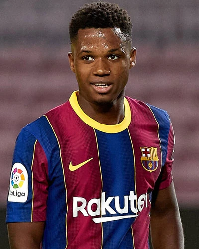
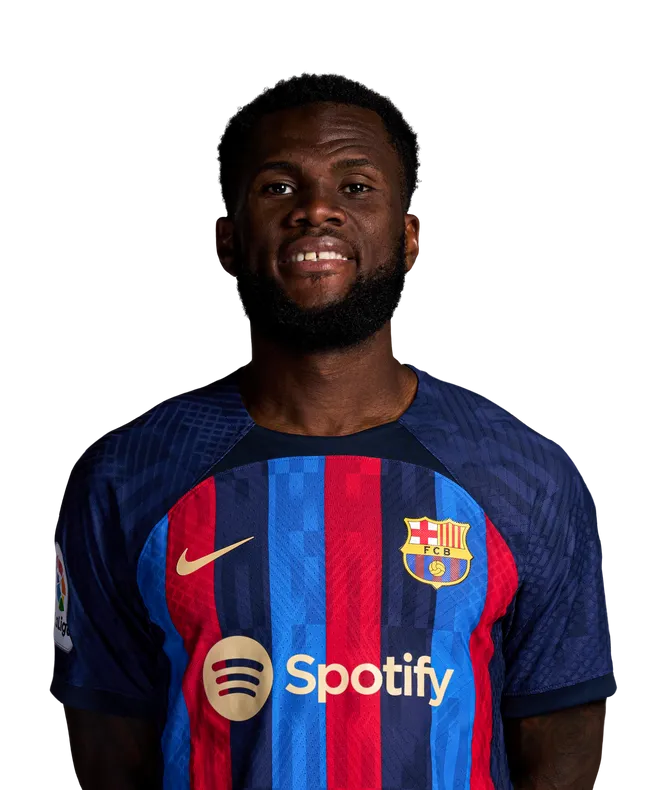

JordiAlba llegó en la temporada 2012-2013 con 23 años
Obtuvo 19 títulos jugando para la Azulgrana
| Liga de España: | 6 títulos |
| Copa del Rey: | 6 títulos |
| Supercopa de España: | 4 títulos |
| UEFA Champions League: | 1 título |
| Supercopa de la UEFA: | 1 título |
| Copa Mundial de Clubes de la FIFA: | 1 título |
Sergio Busquets llegó en la temporada 2008-2009 con 20 años
Obtuvo 36 títulos jugando para la Azulgrana
| Liga de España: | 10 títulos |
| Copa del Rey: | 7 títulos |
| Supercopa de España: | 8 títulos |
| UEFA Champions League: | 4 títulos |
| Supercopa de la UEFA: | 4 títulos |
| Copa Mundial de Clubes de la FIFA: | 3 títulos |
LaLiga impone al FC Barcelona para aprobar su plan de viabilidad económica, para agilizar el traspaso de algunos, lo antes posible
Los primeros para una posible salida son los jugadores:
Ansu Fati
Ferran Torres

Franck Kessié

Ya se anunció su salida del Paris Saint-Germain
El astro argentino, próximo a cumplir 36 años, ya ha recibido una propuesta oficial por parte del Inter Miami, del propietario y exjugador David Beckham.
Está a la espera de que termine de llegar una oferta del FC Barcelona, la cual falta la aprobación de LaLiga
Y con ello Messi tomará una decisión a partir de la semana que viene